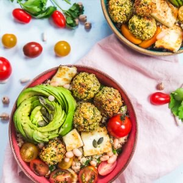

Bol de quinoa, falafels, avocat et haricots blancs

Hello les gourmands!!! Aujourd’hui je vous retrouve avec un de mes déjeuners favoris!! Un bol dans lequel on mélange plein de bonnes choses et qui fait que l’on se sent bien toute la journée!!
Je ne vais pas vous présenter cette « tendance » des bols dans lesquels le principe est de mélanger tout ce que l’on aime car c’est vu et revu un peu partout sur le net. Pour ceux qui ne connaîtraient pas encore on appelle ces bols des « buddha bowl ». Le principe est donc de mettre dans un bol des légumes, un peu de fromage pour ceux qui aiment on rajoute du quinoa, du boulghour, un mélange de céréales ou encore des légumes secs.
Pourquoi BOWL? (bol en français^^) car plutôt que de présenter ce fameux mélange dans une assiette on le sert dans un bol (voir carrément dans un saladier) joliment présenté histoire de rendre l’expérience encore plus appétissante :). Et Pourquoi Buddha (Bouddha) car une fois le bol remplit, le volume très GÉNÉREUX du contenu (il suffit de regarder la photo pour se faire une idée), rappellerait tout simplement la forme du ventre de Bouddha^^!! (merci Hellocoton^^ pour cette explication)
En réalité cette appellation viendrait surtout du fait que normalement un bon buddha bowl doit être constitué d’ingrédients sains, de produits végétariens, voire même vegan ce qui rappellerait donc les principes du bouddhisme (à savoir le respect de tout être vivant)!
Bref on est à 100% dans le concept des recettes « healthy » ce qui vous donne aussi un aperçu de la plupart de mes repas du midi.
Avec ce type de présentation je trouve un maximum de plaisir à préparer mon assiette (car quand je suis seule dur dur de me faire quelque chose à manger) en jouant avec les ingrédients, les couleurs et j’ai avant tout un déjeuner complet histoire de bien tenir toute la journée. Je vous embête rarement avec mes repas du midi ou avec ce type d’assiette car il y en a déjà assez sur internet et ce n’est pas très compliqué à faire.
J’avais réalisé cette recette au printemps dernier dans le cadre d’une collaboration avec la marque Vivien Paille que j’aime beaucoup et qui me permet de poster un bout de mon travail avec eux par ici. Ici j’ai donc fait un bol sur une base de quinoa mélangé avec des haricots blancs et du persil puis j’y ai ajouté des falafels au four, une petite rose d’avocat et surtout du fromage halloumi dont je raffole!! Bref autant vous dire que ce bol est vraiment très complet et surtout très rapide à faire (seuls les falafels sont un peu long et peuvent être préparés en avance).
Je vous laisse avec la recette, n’hésitez pas à me donner vos avis 🙂 et moi je vous dis à très vite avec un nouvel article!!
Ingrédients
- Haricots blancs - 200g
- Quinoa - 1 verre (environ 150g)
- Persil - 1/2botte
- Avocat - 1
- Halloumi - 100g
- Tomates cerines - 10
- Huile d'olive - 3càs
- Citron - 2 càs
- Sel, poivre
- Cumin
- Voir la recette sur le blog : falafels au four (et plus bas pour les ingrédients)
Instructions
- Une dizaine de falafels Ingrédients : Pois chiches secs - 250g Oignon – 1/2 Gousse d'ail - 2 Coriandre fraîche - 1/4 bouquet Persil - 1/4 bouquet Cumin - 1 càc Cardamome – 1/2 càc Sel - 1 pincée
- Cuire les haricots blancs comme indiqué sur le paquet si vous les prenez crus S'ils sont en conserves, égouttez-les, réservez
- Cuire le quinoa dans un grand volume d’eau salée et égouttez-le en fin de cuisson, réservez.
- Ciselez finement le persil
- Mélangez dans un grand saladier les haricots blancs cuits, le quinoa et le persil
- Assaisonnez avec l’huile d’olive, le jus de citron, le sel et le poivre et le cumin
- Mettez le tout au frais
- Quand le mélange a refroidit, coupez les tomates cerises en deux et l’avocat en lamelles
- Découpez le fromage halloumi en fines tranches et faites-les griller
- Dans deux bols, répartissez le mélange quinoa/haricots blancs et ajoutez par-dessus des tomates cerises, la moitié de l’avocat et le fromage
- Servir frais
Les tips de la communauté
Recette appréciée avec enthousiasme pour l'association et les ingrédients. Les falafels maison sont un succès avec quelques variations apportées (fromage remplacé par carré frais).
Astuces
- Préparer les falafels maison plutôt qu'achetées du commerce
- Adapter la farce tahini en s'inspirant d'autres blogs (ex. C'est m'a fournée)
- Remplacer le fromage halloumi par du carré frais comme alternative
Variantes suggérées
- Remplacer le fromage halloumi par du carré frais